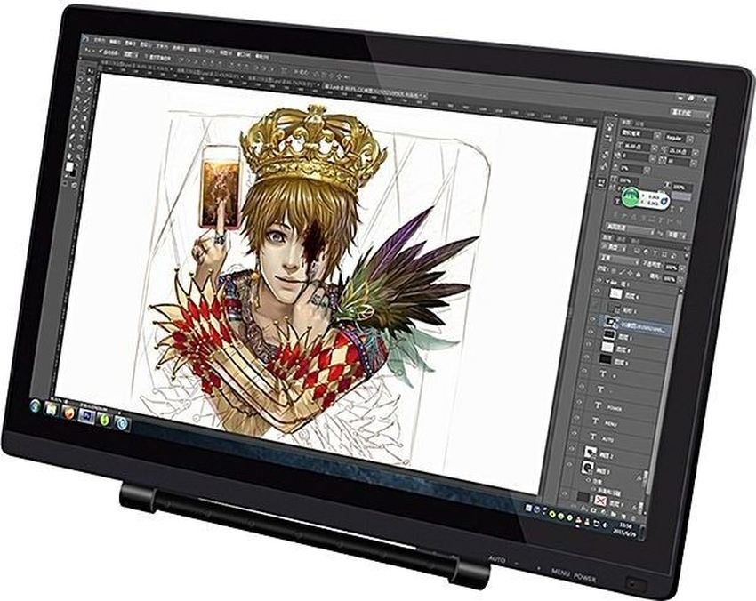

Les dessins graphiques sont realisés grace a une tablette graphique
c'est un dispositif de pointage servant à tracer à la main des graphiques, des schémas, des dessins, du texte manuscrit. .
choisir sa tablette(lien cliquable) voici une video qui explique les information du site precedant
!